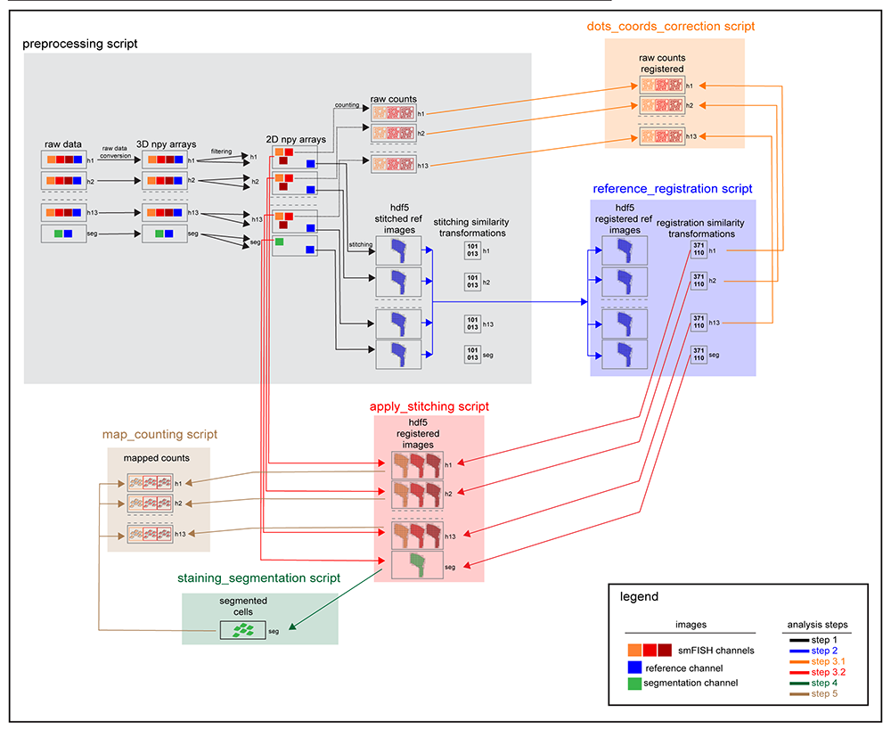

Pipeline overview¶
Dataset structure¶
Each experimental folder contains a number of sub-folders corresponding to the osmFISH cycles and the immunofluorescence stainings. Each subfolder contains raw Nikon Nd2 files separated according to fluorescence channel. Each file stores all the xy positions acquired as a serie of 3D stacks.

Pipeline scheme¶
The entire image pipeline can be run through 6 sequential scripts. The parallelization of the code allows to process all the hybridization simultaneously. The lines with arrowhead connect the input data to the corresponding analysis step. The preprocessing script converts the raw data and generate the filtered images, the raw counting and the stitched reference channel. The stitched reference channels from each hybridization are aligned (reference_registration script) and the registration similarity transformations are used to register the raw countings (dots_coords_correction script) and the osmFISH filtered images (apply_stitching script). Once aligned, the segmentation channel is processed to generate cell outlines (staining_segmentation script) that are used to count the cell mapped RNA molecules (map_counting script). In this step the counting is run using the same approach used to count the RNA molecules in each image (raw counting) in order to account for cell-specific background. The scripts that form the pipeline use a modular open source API that can be used to create tailored pipelines to process different types of smFISH data.
